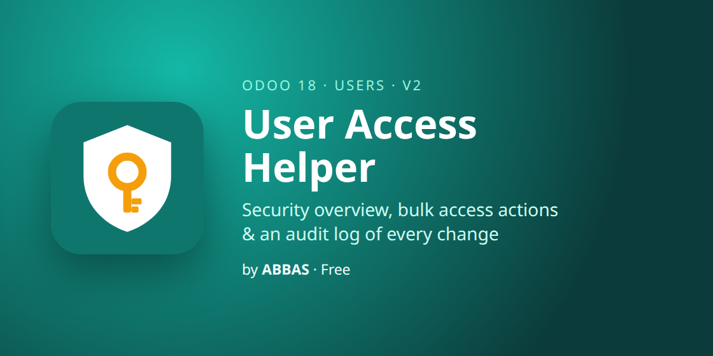
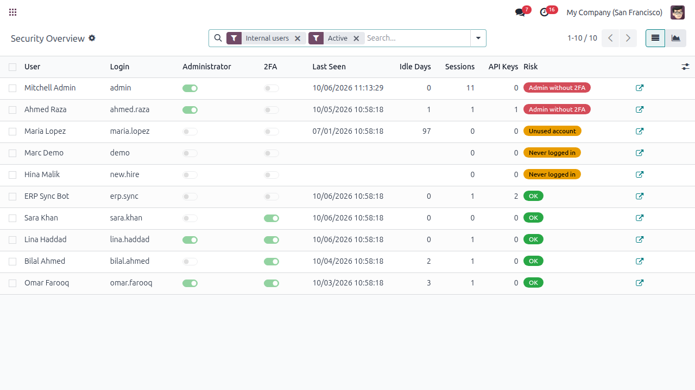
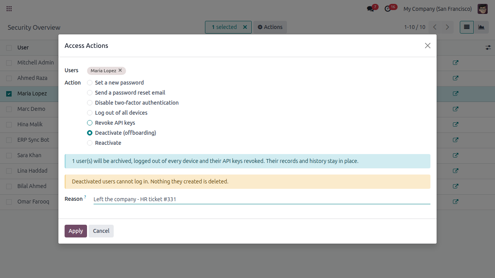
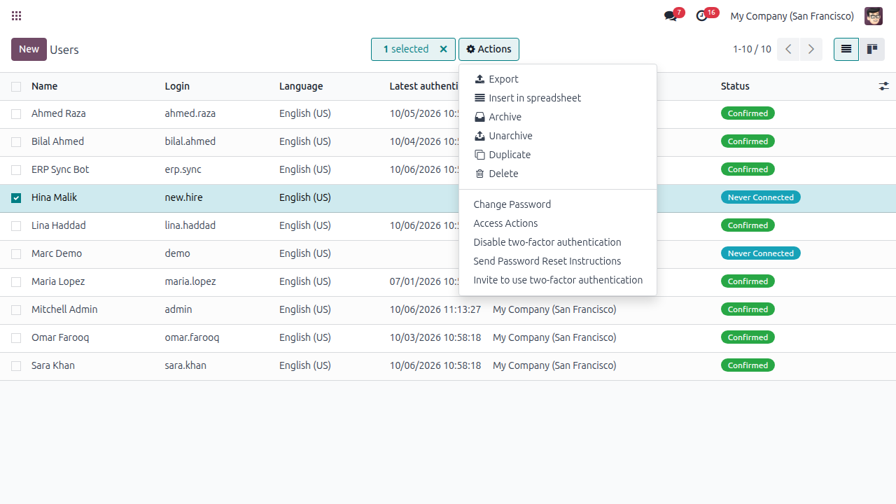
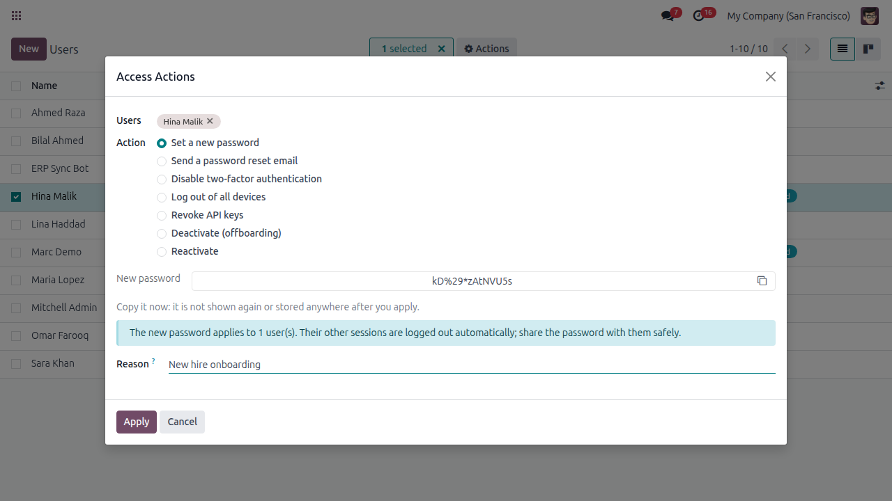
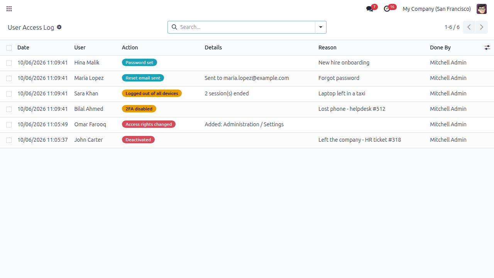

See which user accounts are a risk, fix them in bulk, and keep a record of every access change

Admins without two-factor authentication, accounts nobody has used for months, people who left but can still log in, API keys nobody remembers: they are invisible in the standard Users list. This module shows them on one screen, lets you act on many users at once, and logs who gave whom which rights.





addons_path) and restart Odoo. On Odoo.sh, push the folder to your repository instead.Write to me and I will answer myself. I also build custom Odoo modules and integrations.
abbasodolution@gmail.comThank you for choosing this module! I am Abbas, an Odoo technical and functional developer. Questions are always welcome through the support page.